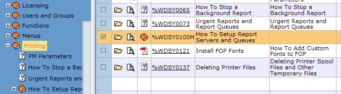
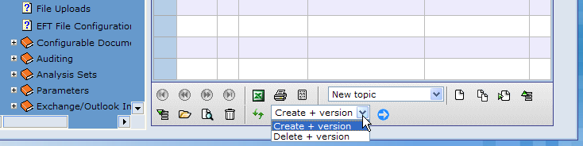
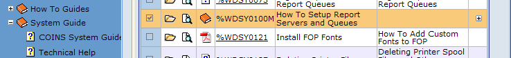

How to Create a Plus Copy Menu Book:
- In the System module, go to Topic Maintenance. Select a menu book that you want to copy; for example, select "How to Setup Report Servers and Queues" under Online Documentation > System Guide > Printing (see Figure 1).
Figure 1: Selected Menu Book

- Select Create + version at the bottom of the screen (see Figure 2) and click Apply Action
 .
.
Figure 2: Create + Version

NOTE
A + appears at the end of the row to show that you have created a plus copy of this menu book (see Figure 3).
Figure 3: Plus (+) Sign

- Refresh the treeview by right-clicking it and choosing Refresh.